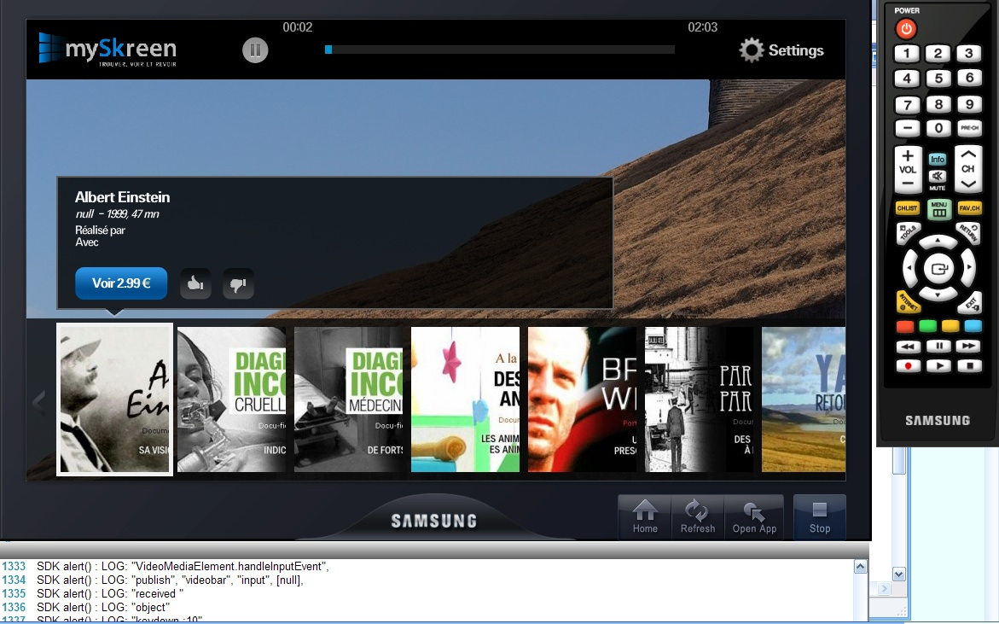
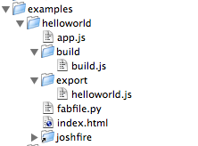

You're strongly adviced to work with an actual device. Do not rely on the emulators alone!
Installation
Install the SDK and the emulator. You also need to install Apache, as you'll need it package your application.
The visual editor is only useful if you plan to develop Samsung TV-only apps. It's not suitable to use it for multi-devices applications development, as it creates specific Samsung UI components.
The SDK editor is a modified Eclipse IDE, you can create a new “Hello World” project by right-clicking on the Apps directory in the left panel and selecting “New Javascript project”. Once done, right click on the project and select “Run emulator”.

The emulator running an application
Note 1 : Your files must remain in C:\Program Files\Samsung\Samsung TV Apps SDK\Apps\, or the emulator won't work.
Note 2 : SDK tends to use 100% of the CPU, making it difficult to use the emulator in the same time. If so, you will use the SDK editor only to create a new project or package it. Use the “Open App” button in the Emulator to execute your project.
For those reasons, and because you are probably doing an application for more than one device, we made several things to help you.
Hello World with Joshfire
If you prefer to use your development tools or have to write the same application for other platforms, Joshfire provides you the right tools.
We will use the “Hello World” example (examples/helloworld) and the build tools so that it can be executed in the Samsung emulator
Starting point : just 2 files and a symlink
Simply edit app.js and in the dependencies list, replace joshfire/app by joshfire/adapters/samsungtv/app. This Web Application is now a Samsung TV application.
run the generic fab optimize method to generate the compiled files in the export directory

Check point : build configuration and result
run the special fab exportAdapterSamsungTV method to obtain the Samsung TV version
Ending point : the Samsung files
Now you obtained the files needed to run an application in the Samsung world. The last two files (videolist-example.zip and widgetlist.xml) are useful if you have a physical device or when you will submit your application to the Samsung validation process.
The emulator needs you to copy the first files and directories in a subdirectory of C:\Program Files\Samsung\Samsung TV Apps SDK\Apps\ directory. Once done, open the emulator and click “Open App”, you should see your app running"
Support and documentation
There is two known forums :
The official forum, mandatory anyway if you want to submit your app : www.samsungdforum.com/
The Maple browser is based on an old Gecko engine, test carefully all of your CSS
CPU is limited, especially on bluray players. You should avoid too much DOM manipulation like the animations on those devices. You can detect the type of device with the static method samsungJoshfire.TVInfoAPI.GetProductType()
the .innerHTML property works but Samsung recommends not using it, because of potential memory saturation. The Joshfire Framework patched for your jQuery $.html() to follow the recommanded alternative method.
The app will always be displayed in 960*540 resolution, whatever the TV resolution. Medias like videos or photos using the Samsung APIs will however be displayed at the TV resolution.
z-index above 99 are ignored
communication with an iframe is possible with some hacks (monitoring the URL dash value of the iframe), but the communication is lost when frame is reloaded. If we find a workaround, we will include it in a next release.
console.log does not work, use J.log() instead
the HTML5 video element does not work as expected, use the adapters/samsungtv/uielements/video.mediaelement class
Forms
bugs
some input types can not be rendered normaly :
checkboxes are white squares, Joshfire provides you a default styling, however it would be pretier to replace them by images (background images do not work)
radio buttons are white squares, not even stylable : avoid them or reprogram them entirely
select fields are not usable : avoid them or reprogram them entirely
In a future release, the adapter will do this for you.
focus
How do you navigate in a form and fill in text fields in a Samsung TV ? Well you can‘t. Or you have to manage the focus and the virtual keyboard yourself. But don‘t worry, we got you covered with a small utility.
Joshfire.define(
['joshfire/adapters/samsungtv/utils/navigationhelper'],
function(NavigationHelper) {
// ask the NavigationHelper utility to search in the DOM the input elements
NavigationHelper.autoDiscoverForms();
// enable up and down keys to go from one textfield to another
NavigationHelper.listenToNavigation();
// autofocus on the first element
NavigationHelper.focus(0);
// events fired when the visibility of the Samsung virtual keyboard changes
// in order to update the UI accordingly
NavigationHelper.subscribe('virtualkeyboard', function(name, event) {
if(event === 'show') {
// move the form to the left
} else if(event === 'hide') {
// center the form
}
});
// when the form disappears, you should run this method
NavigationHelper.reset();
}
);
Other things Joshfire does for you
XHR (AJAX)
Even if the application is executed on the local file system the native XMLHTTPRequest object works fine because cross-domain calls are allowed. However the the $.ajax() jQuery method had to be fixed. We still recomend using the Utils.DataSource.request() method, so that your application is cross-device compatible
Shortcuts to TV APIs
If you know what you are doing, you can have a direct access to the TV APIs :
samsungJoshfire.widgetAPI, instance of new Common.API.Widget()
samsungJoshfire.pluginAPI, instance of new Common.API.Plugin()
samsungJoshfire.oKeys, contains all remote control key values as returned by new Common.API.TVKeyValue()
samsungJoshfire.TVNavigationAPI is the clsid:SAMSUNG-INFOLINK-NNAVI plugin
samsungJoshfire.TVInfoAPI is the clsid:SAMSUNG-INFOLINK-TV plugin
Do not forget to contribute to this adapter if you think we missed something important that could be used by other people.
Local storage
There will be Joshfire Framework methods to do it in a cross-device way, but in the meantime we made two shortcut methods to save content locally on the Samsung TV
samsungJoshfire.writeToFileID(sFileID, sContent )
samsungJoshfire.readFromFileID(sFileID )
However be careful :
there is no way to know if you reached the limit : plan for failure
the total available space is unknown : plan for failure
all applications share the same space : store as litle as possible
it seems that there is no sandbox so any application can access to the files of the other : provide a non-guessable sFileID
Volume control, TV tuner, navigation keys
The applications on Samsung TV are a bit too powerful, and that includes preventing the user to leave your application, watching another TV show or even to control his own volume ! Samsung is aware of this and will reject your application if you do such things so Joshfire got you covered too:
the config.xml file is already configured with correct settings for srcctl, audiomute, videomute, flashplayer and movie. That means that when running your application, the current video chanel is stopped, but when exiting, it will get back.
we let the user manage the volume with the standard OSD
we binded the remote control multimedia buttons to the play / pause / stop / forward / rewind global events
we require the TV to display the app when it is inserted. If you need to modify this behaviour, overwrite App.insert() and call samsungJoshfire.widgetAPI.sendReadyEvent(); when you think your application can be displayed.
Playing videos
You should use uielements/video.mediaelement who will work as expected.
Joshfire.define(
['src/uielements/video.mediaelement'],
function(Video) {
// plays a non protect H.264 file
Video.play('http://example.org/video/file.mp4')
// plays a video with DRM management
Video.play( {
DRMType:'HLS', // could be HLA
url:'http://example.org/video/fileWithToken.m3u8'
});
// listen to download or play events
Video.subscribe('error', function() {
});
Video.subscribe('loading', function() {
// buffering, should display an indicator
});
Video.subscribe('playing', function() {
// update the play/pause button state
});
Video.subscribe('timeupdate', function(args) {
console.log(args.currentTime, args.totalTime);
})
}
);
Be aware of the fact that by default the video is played fullscreen, behind the web interface. That means you have to let transparent background-color to see it.